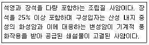
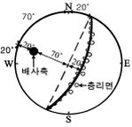
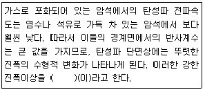
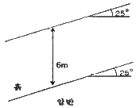
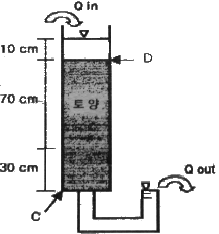

응용지질기사 (2014-05-25 기출문제)
1과목: 암석학 및 광물학
1. 다음 변성암의 조직 중 침상이나 판상의 광물들이 편리를 형성하지 않고 연접하여 공생하며 부분적으로 방사형을 이루는 조직은?
- 입상 변정질(granoblastic) 조직
- 다이아블라스틱(diablastic) 조직
- 파쇄(cataclastic) 조직
- 잔류(relict) 조직
(정답률: 91%)

2. 다음 중 원암과 변성암의 연결로 옳은 것은? (단, 원암-변성암의 순서임)
- 셰일-혼펠스
- 사암-대리암
- 석회암-규암
- 화강암-점판암
(정답률: 84%)
3. 다음 중 행인상 구조가 나타날 수 있는 암석은?
- 화강암
- 현무암
- 편마암
- 석회암
(정답률: 59%)
4. 다음 중 이질암이 광역변성작용을 받았을 때 가장 고변성도의 변성분대에서 나타나는 변성광물은?
- 녹니석
- 십자석
- 남정석
- 규선석
(정답률: 63%)
5. 다음 중 오피(ophiolite)의 구성암이 아닌 것은?
- 유문암
- 감람암
- 반려암
- 현무암
(정답률: 71%)
6. 다음 중 현정질 화성암의 광물학적 분류 기준으로 옳지 않은 것은?
- 석영의 존재 유무
- 장석의 종류와 그들 사이의 양적인 비
- 고철질 광물의 종류
- 점토 광물의 함량
(정답률: 71%)
7. 다음 중 지층의 상하 판단을 할 수 있는 퇴적구조와 가장 거리가 먼 것은?
- 사층리
- 물결자국
- 퇴적소극
- 건열
(정답률: 83%)
8. 다음에서 설명하는 암석은 무엇인가?

- 그레이와케
- 암편 사암
- 아르코스
- 석영 사암
(정답률: 71%)
9. 국제지질과학연합(IUGS) 분류 안에 의거할 때 석영이 화강암에 비해서는 적고 거의 같은 양의 사장석과 알칼리 장석을 포함하는 암석은 무엇인가?
- 화강 섬록암
- 몬조나이트
- 섬장암
- 안산암
(정답률: 77%)
10. 점이층리에 대한 설명으로 옳은 것은?
- 다른 특성을 가진 층들이 교호되어 쌓인 층리
- 서로 다른 크기의 입자들이 질서 없이 불규칙하게 쌓여있는 층리
- 실트보다 큰 입자들이 강의 난류나 바람 등에 의해 경사되어 쌓인 층리
- 지층의 하부에서 상부로 갈수록 지층을 구성하는 입자의 입도가 점차로 세립화 하는 층리
(정답률: 90%)
11. 비슷한 크기의 양이온 또는 음이온을 가지고 있으며 동일한 결정구조를 갖는 광물들 사이의 관계를 무엇이라 하는가?
- 유질동상
- 동질이상
- 다형현상
- 변태현상
(정답률: 75%)
12. 광학적으로 등방성(isotropic)과 관계없는 것은?
- 광물내부의 어느 방향으로도 빛의 통과 속도가 일정하다.
- 광물내부의 어느 방향으로도 빛의 굴절률이 일정하다.
- 등방성 광물은 복굴절 광물로서 빛이 두 방향으로 굴절한다.
- 일반적으로 유리나 물과 같은 비정질 물질은 광학적으로 등방성을 갖는다.
(정답률: 76%)
13. 바이스 기호(Weiss symbol)로 {4a : 2b : c}로 나타나는 면의 밀러 지수(Miller index)는?
- (4 2 1)
- (1 2 4)
- (1/4 1/2 1/1)
- (1/1 1/2 1/4)
(정답률: 78%)
14. K는 원자번호가 19이다. 즉 K는 총 19개의 전자를 가지고 있는데, 이 때 최외각 전자는 몇 개인가?
- 1
- 2
- 3
- 4
(정답률: 82%)
15. 광물이 열을 받으면 어떤 온도에서 구성 성분으로 분해되어 기체를 발생하는 현상은?
- 용융
- 열팽창
- 해리
- 열전도
(정답률: 77%)
16. 두 가지 이상의 원소로 구성된 이온을 무엇이라 하는가?
- 양이온
- 착이온
- 복수이온
- 합이온
(정답률: 86%)
17. 천연광물의 생성조건을 연구하기 위해 광물을 합성하기도 한다. 높은 온도와 압력 하의 오토클레이브 내에서 용액으로부터 결정을 성장시키는 방법으로 수정, 루비 등의 제조에 이용되는 합성법은 무엇인가?
- 쵸크랄스키법
- 용액 침전법
- 베르누이법
- 열수 합성법
(정답률: 86%)
18. 배위수(C.N.)가 4인 광물에서 음이온에 대한 양이온의 반지름 비의 범위는?
- 0.155~0.255
- 0.255~0.414
- 0.414~0.732
- 0.732~1.000
(정답률: 80%)
19. 다음 중 섬아연석의 화학조성에서 Zn을 흔히 치환해서 고용체를 이루는 성분은?
- Fe
- Al
- Pb
- Cu
(정답률: 47%)
20. 다음 중 친수성 광물과 소수성 광물을 분리하는 방법은?
- 파쇄 및 분급
- 용리법
- 자력분별법
- 부유선광법
(정답률: 67%)
2과목: 구조지질학
21. 해양저 확장설(sea-floor spreading)의 가장 중요한 증거가 된 것은 해양지각의 자기이상대 무늬의 발견과 해석에서 비롯되었다고 한다. 해양저 확장의 가장 직접적인 증거가 된 것은 이러한 자기이상대의 어떠한 특성 때문인가?
- 특이한 무늬모양
- 정-부의 반복적인 자기이상
- 해양지각 암석의 자화
- 자기이상대의 대칭성
(정답률: 80%)
22. 다음 중 지질연대 단위와 시간층서 단위의 연결로 옳지 않은 것은? (단, 지질연대 단위-시간층서 단위)
- 대(代)-대층(代層)
- 기(紀)-계(系)
- 세(世)-대(帶)
- 절(節)-조(組)
(정답률: 92%)
23. 다음 중 신장절리(extension joint)의 특징으로 옳지 않은 것은?
- 절리간격이 비교적 일정하다.
- 공액상(conjugate)으로 발달한다.
- 절리면이 거칠고 암질에 따라 발달정도가 다르다.
- 최대주응력 방향과 평평하게 발달한다.
(정답률: 79%)
24. 다음 그림은 하나의 배사구조를 형성하는 지층의 층리를 측정하여 입체투영(stereographic projection)한 것이다. 배사축의 선주향(trend)과 선경사(plunge)로 맞는 것은? (단, 층리면은 하반구에 π-diagram)으로 표시함)

- 20°, 20°
- 20°, 70°
- 290°. 20°
- 290°. 70°
(정답률: 70%)
25. 모나드녹크(monadnock)에 대한 설명으로 옳지 않은 것은?
- 침식윤회 모델에 의하면 노년기 지형에 속한다.
- 모나드녹크가 형성되는 시기에는 하곡의 폭이 확대되며 하곡 양측사면 경사도가 완만해 진다.
- 호주 중앙부의 Ayers Rock이 대표적인 예이다.
- 준평원기 바로 전에 발달하는 지형이다.
(정답률: 54%)
26. 지하 10~15km 온도 300℃ 이상에서 화강암이 전단변형 작용을 받았을 때 일반적으로 형성되는 단층암은?
- 파쇄암(cataclasite)
- 단층각력암(fault breccia)
- 단층비지(fault gouge)
- 압쇄암(mylonite)
(정답률: 72%)
27. 지진이 발생하고 나서 10초 후에 P파가 도착하였으며, 그 7초 후에 S파가 도착하였다. P파 속도는 S파 속도의 몇 배인가?
- 1.2배
- 1.7배
- 2.2배
- 2.7배
(정답률: 86%)
28. 다음 중 지진에 의한 피해유형이 아닌 것은?
- 지반의 운동 또는 진동
- 단층운동에 의한 지표의 균열
- 지반의 액상화 현상
- 지구의 온난화
(정답률: 96%)
29. 다음 중 가장 젊은 지질사건은?
- 동해 열림
- 불국사 지변
- 송림 지변
- 남중국-북중국 충돌
(정답률: 52%)
30. 대륙지각에서 암석의 강도(strength)가 가장 큰 부분은?
- 취성영역(brittle regime)의 중간부
- 연성영역(ductile regime)의 최하부
- 연성영역의 중간부
- 취성-연성 전이대
(정답률: 82%)
31. 다음 중 섭입대에 관한 설명으로 옳지 않은 것은?
- 지판의 수렴경계에서 암석권이 맨틀 속으로 섭입되어 가라앉는 경계이다.
- 섭입되는 암석권은 항상 해양암권이다.
- 섭입대의 하구에 가까울수록 심발지진이 발생한다.
- 호상열도의 생성 및 화산 작용과 관계된다.
(정답률: 54%)
32. 다음 중 점완단층에 대한 설명으로 옳지 않은 것은?
- 점완단층은 정단층 운동으로 형성된다.
- 점원단층의 단층면은 곡면을 이룬다.
- 점완단층은 흔히 상반 배사구조가 생긴다.
- 점완단층은 지표에서 경사가 완만하나 지하로 깊어짐에 따라 급경사를 이룬다.
(정답률: 84%)
33. 우리나라 지질계 통상 가장 큰 부정합은?
- 사동통과 고방산통
- 조선계와 평안계
- 대동계와 경상계
- 평안계와 대동계
(정답률: 73%)
34. 지층의 경사가 급한 곳에서 형성되는 양 사면이 가파르고 좁은 산릉은?
- 에스카프먼트(escarpment)
- 호그백(hogback)
- 지루와 지구(horst & graben)
- 단층애(fault scarp)
(정답률: 72%)
35. 다음의 주응력(principal stress, σ1, σ2, σ3)의 관계가 나타내는 응력장의 상태는? (단, 주응력의 관계 σ1＞σ2=σ3=0)
- 정수압상태
- 일축압축상태
- 이축압축상태
- 삼축압축상태
(정답률: 95%)
36. 호상열도(island arc)에서 일어나는 화성활동의 특징이 되는 것은?
- 안산암질 마그마의 활동이 빈번하다.
- 화강암의 관입이 활발하다.
- 혼성암의 발달이 빈번하다.
- 초염기성암의 발달이 격심하다.
(정답률: 67%)
37. 변형작용을 받은 정육면체가 직육면체로 변형되었다. 변형작용 전에 정육면체의 한 변의 길이가 10m이고, 변형작용 후에 직육면체의 높이는 15m, 밑면의 가로는 8m, 세로는 5m 이다. 체적변형률은 얼마인가?
- 0.4
- 0.6
- -0.4
- -0.6
(정답률: 54%)
38. 다음의 지형 중에서 변형작용의 기원이 다른 하나는?
- 알프스 산맥
- 아프리카 대열곡
- 홍해
- 동태평양 해령
(정답률: 77%)
39. 지구내부구조에서 지각 및 상부 맨틀을 포함하고 있으며, 평균 두께가 100km인 부분은?
- 중간권
- 연약권
- 암석권
- 성장단층
(정답률: 87%)
40. 다음 중 응력조건상 습곡구조와 수반되어 발견되기가 가장 쉬운 단층은?
- 역단층
- 주향이동단층
- 정단층
- 성장단층
(정답률: 72%)
3과목: 탐사공학
41. 다음의 탐사 대상체를 파악하고자 할 때 중력탐사 적용에 가장 곤란한 것은?
- 암염돔
- 빙하 층 두께
- 피라미드 내부의 지하 통로
- 사력댐 누수
(정답률: 68%)
42. 중력탐사 자료의 처리과정에서 수직 2차 미분법의 적용 목적은?
- 잔여이상 추출
- 부게 이상 추출
- 지형보정
- 고도보정
(정답률: 66%)
43. 상부층의 밀도 2.0g/cm3, 탄성파 속도 1200m/sec이며, 하부층의 밀도 2.4g/cm3, 탄성파 속도 4000m/sec인 지층의 경계면에서 수직으로 탄성파가 입사한 경우, 투과계수는 얼마인가?
- 0.3
- 0.4
- 0.5
- 0.6
(정답률: 46%)
44. 200MHz 주파수의 안테나를 사용하여 상대 유전율이 4인 지반을 대상으로 지하투과 레이다 탐사(GPR)를 한다고 할 때 레이다파의 파장은 얼마인가?
- 0.11m
- 0.33m
- 0.75m
- 3.00m
(정답률: 48%)
45. 다음 중 반사법 탄성파탐사 자료의 전처리과정에 해당하지 않는 것은?
- 디멀티플렉싱(Demultiplexing)
- 이득회수(Gain recovery)
- 편집(Editing)
- 디콘볼루션(Deconvolution)
(정답률: 59%)
46. 다음 중 지열측정에 대한 설명으로 옳지 않은 것은?
- 지표면에서의 지열의 발산량은 지표면 아래의 지온구배와 암석의 열전도도를 측정하여 계산할 수 있다.
- 육상에서의 지온구배 측정은 시추공을 이용하여 약 100m 이내의 심도에서 수행하여야 한다.
- 정밀한 지온구배 측정을 위해서는 시추공 내에서의 지하수의 흐름과 시추공 주변 지형의 영향에 대한 보정이 필요하다.
- 암석의 열전도도는 시추코어를 이용해서 실험실에서 측정한다.
(정답률: 71%)
47. 다음 ( ) 안에 알맞은 내용은 무엇인가?

- 탈반향(dereverberation)
- 디고스팅(deghosting)
- 명점(bright spot)
- 백색화(whitening)
(정답률: 69%)
48. 암석이나 퇴적물에서의 탄성파 속도에 대한 설명으로 옳지 않은 것은?
- 포화된 퇴적물은 불포화된 퇴적물보다 속도가 느리다.
- 미고결 퇴적물은 고결 퇴적물보다 속도가 느리다.
- 풍화된 암석은 풍화되지 않은 암석보다 속도가 느리다.
- 파쇄된 암석은 파쇄되지 않은 암석보다 속도가 느리다.
(정답률: 70%)
49. 다음 중 일반적인 지자기장의 일 변화량은 어느 정도인가?
- 0.1~0.3γ
- 1.0~3.0γ
- 10~30γ
- 100~300γ
(정답률: 65%)
50. 원소의 지구화학적 분류에서 황과의 친화도가 높은 원소로 공유결합의 경향이 높은 원소들이 주로 속하는 분류는?
- 친철(siderophile) 원소
- 친동(chalcophile) 원소
- 친석(lithophile) 원소
- 친기(atmophile) 원소
(정답률: 54%)
51. 중력탐사에서 중력 측정값의 보정에 관한 설명으로 옳지 않은 것은?
- 프리-에어 보정은 중력측정이 해수준면으로부터 1m 상승함에 따라 0.3086mGal씩 중력 측정값에서 빼준다.
- 중력측점이 해수준면상에 있으면 프리-에어 보정은 필요 없다.
- 부게 보정은 중력 측정값에 포함된 기준면 위쪽의 초과 질량 영향을 제거하기 위한 것이다.
- 측정위치가 해수준면 아래에 있다면 부게 보정값은 중력 측정값에 더해져야 한다.
(정답률: 53%)
52. 전기비저항 검층법 중 수평지층을 관통하는 수직 시추공에서 측정 전류를 지층의 수평방향으로 흘려보내 인접지층의 영향을 최소화하고 조사심도를 향상시킨 방법은?
- 단노말 전기비저항 검층
- 래터럴 전기비저항 검층
- 마이크로 전기비저항 검층
- 지향식 전기비저항 검층
(정답률: 70%)
53. 방사능 측정기기인 신틸레이션 미터(scintillation meter)에 사용하는 결정의 성분은?
- Ar
- Ra
- NaI
- Al2O3
(정답률: 84%)
54. 다음 중 인공 신호원이 없이 지하 전기전도도 분포의 조사가 가능한 전기탐사법은?
- 소형 루프법
- 시간영역 전자탐사법(TEM)
- MT 법
- 항공 전자탐사법(INPUT 시스템)
(정답률: 86%)
55. 다음 중 지하투과 레이다 탐사법(GPR)에 대한 설명으로 옳지 않은 것은?
- 지하투과 레이다 탐사법은 10MHz-1GHz 주파수 대역의 전자기 펄스를 이용하여 천부 지하구조를 파악하는 기법이다.
- 매질간 유전율의 차이에 의한 전자기파의 반사와 회절 현상 등을 측정하고 이를 해석하여 지질구조를 파악한다.
- 지하에서 굴절되어 전달되는 파동을 주요 신호원으로 한다는 점에서 천부 굴절법 탄성파탐사와 유사하다.
- 전기전도도가 큰 매질인 점토층이나 염수 등에서는 전자기파의 감쇠특성으로 인하여 적용이 어려운 단점이 있다.
(정답률: 52%)
56. 다음 중 해상용 탄성파탐사의 에너지원으로 사용되지 않는 것은?
- 에어건(air gun)
- 바이브로사이스(vibroseis)
- 지오처프(geochirp)
- 스파커(sparker)
(정답률: 66%)
57. 여러 조암 광물에 흔히 포함되어 있다는 장점이 있고, 비교적 반감기가 짧아서 젊은 암석의 연령 측정이 가능하며, 측정할 수 있는 연령 범위가 매우 넓은 절대 연령 측정법은?
- Rb-Sr 법
- U-Pb 법
- Tritium 법
- K-Ar법
(정답률: 87%)
58. 다음 중 우라늄(U) 광상의 지시원소는?
- As
- B
- Zn
- Rn
(정답률: 71%)
59. 코발트 혹은 세슘을 소스로 사용하고 매질 내에서 감마선의 콤프턴 산란의 원리를 이용하는 공내검층은?
- 밀도 검층
- 중성자 검층
- 음파 검층
- 공경 검층
(정답률: 78%)
60. 2극법을 사용하는 단노말 전기비저항 검층에서 전류전극(C1)과 전위전극(P1) 사이의 거리를 0.4m, 측정된 저항값(R)이 50Ω이라면 전기비저항값은 얼마인가?
- 251Ω-m
- 334Ω-m
- 423Ω-m
- 502Ω-m
(정답률: 60%)
4과목: 지질공학
61. 굴착면 관찰조사(Face Mapping)에 대한 설명으로 옳지 않은 것은?
- 굴착면을 직접 조사함으로써 지반의 불균질성 및 이방성 파악과 지하수 상태 등의 지반환경 파악이 용이하다.
- 굴착면 관찰조사 기법에는 조사방법에 따라 조사선 조사와 조사창 조사로 나눌 수 있다.
- 조사선 조사는 암반표면에서 어느 일정 면적상에 존재하는 모든 불연속면을 측정하는 방법이다.
- 조사창 조사 자료를 분석하여 얻을 수 있는 정보로는 절리군 방향분포, 절리선 길이분포 등이 있다.
(정답률: 66%)
62. 다음 그림과 같은 건조한 무한사면이 있다. 흙과 암반의 경계면에서 전단강도정수 c=2.0t/m3, Φ=20° 이고, 흙의 단위중량은 1.95t/m3이다. 사면의 높이가 6m, 경사가 25°일 때 경계면의 활동에 따른 안전율은?

- 1.08
- 1.23
- 1.49
- 1.64
(정답률: 56%)
63. 흙의 통일 분류법에서 높은 소성도의 무기질 점토, 가소성 점토, 실트질 점토의 분류기호 표시는?
- GW
- OL
- CH
- CL
(정답률: 52%)
64. 동일한 재료로 동일한 단면적을 가지며 단면의 모양은 다른 몇 가지 시료에 대해 일축압축강도시험을 할 때 일반적으로 가장 큰 압축강도를 보이는 것은?
- 삼각형 단면의 시료
- 사각형 단면의 시료
- 육각형 단면의 시료
- 원형 단면의 시료
(정답률: 83%)
65. 흙을 통과하는 지하수의 유출속도에 영향을 미치는 요인으로 옳지 않은 것은?
- 지하수의 단위중량
- 지하수의 동적 점성도
- 흙의 단위중량
- 공극의 크기
(정답률: 63%)
66. 암반의 공학적 분류법 중 RMR(Rock Mass Rating) 분류법에서 고려되는 요소가 아닌 것은?
- 무결암의 일축압축강도
- 시추코아회수율(TCR)
- 지하수 상태
- 불연속면 상태
(정답률: 65%)
67. 터널 시공시 터널 벽면 사이 거리의 상대적 변화 등을 측정하는 계측은?
- 터널내관찰조사
- 지중변위계측
- 내공변위계측
- 록볼트 인발시험
(정답률: 78%)
68. 다음 지반개량공법 중 넓은 지역에 걸쳐 지표면에 미리 흙을 성토하여 실질적으로 구조물의 축조 후 침하를 없앨 수 있는 공법은?
- 프리로딩공법
- 동다짐공법
- 진동부유공법
- 약액주입공법
(정답률: 73%)
69. 다음 중 산사태에 대한 설명으로 옳지 않은 것은?
- 산사태는 전단강도 초과로 인해 한 개 혹은 그 이상의 붕괴면을 따라 미끄러지는 토체 또는 암체의 움직임이다.
- 산사태는 일반적으로 토석류를 일으킬 수 있는데, 이는 불포화된 물질조건에서 발생하는 경향이 있다.
- 회전형 산사태는 점성이 있고 균질한 토층에서 일반적으로 발생한다.
- 전이형 산사태는 붕괴 메커니즘이 단순한 기하학적 구조를 가지므로 회전형 산사태에 비해 빠르게 발생한다.
(정답률: 85%)
70. 다음 중 흙의 기본물성에 대한 설명으로 맞는 것은?
- 포화도는 100%보다 클 수 있다.
- 공극비는 1보다 클 수 없다.
- 함수비는 100%보다 클 수 없다.
- 공극률은 100%보다 클 수 없다.
(정답률: 61%)
71. 풍화되지 않은 건조한 시료에 대해 수행한 슈미터 해머의 반발 지수값이 40이고, 톱으로 자른 매끈한 면의 기본마찰각이 35°이다. 이 시료가 풍화 및 변질되어 측정한 슈미트 해머의 반발 지수값이 20이라면 예상되는 잔류마찰각은 얼마인가?
- 20°
- 25°
- 30°
- 40°
(정답률: 48%)
72. 연약한 점성토 지반의 비배수 전단강도를 얻을 목적으로 시행되는 원위치 시험의 종류는 무엇인가?
- 공내가압계시험
- 플랫잭시험
- 현장베인시험
- 점하중시험
(정답률: 61%)
73. 주로 모래와 같은 조립토의 다짐 정도 즉, 느슨한 상태로 있는지 또는 조밀한 상태로 있는 지를 나타내는 값은?
- 상대밀도
- 포화밀도
- 터프니스지수
- 활성도
(정답률: 70%)
74. 다음 중 일정한 응력 하에서 변형률이 지속적으로 증가하는 크리프(creep) 현상을 가장 잘 보이는 대표적인 암석은?
- 암염
- 사암
- 편마암
- 유문암
(정답률: 68%)
75. 다음 그림과 같은 토양 컬럼실험에 C지점과 D지점에서의 전수두(total head)를 바르게 나타낸 것은?

- C지점: 0cm, D지점: 110cm
- C지점: 0cm, D지점: 10cm
- C지점: 100cm, D지점: 110cm
- C지점: 110cm, D지점: 10cm
(정답률: 82%)
76. 굴착작업으로 이완된 암괴를 이완되지 않은 암반에 고정시켜 낙하를 방지하는 록볼트의 지보효과는?
- 빔형성효과
- 매달림효과
- 내압효과
- 아치형성효과
(정답률: 76%)
77. 다음 중 수압파쇄시험에 대한 설명으로 옳지 않은 것은?
- 수압파쇄시험은 단일 시추공에서 심도에 영향을 받지 않고 실시할 수 있다.
- 수압파쇄시험에 의해 암반의 인장강도를 구할 수 있다.
- 수압파쇄에 의한 균열은 최소 주응력 방향으로 발생한다.
- 수압파쇄시험은 암반의 초기응력을 측정하기 위한 시험이다.
(정답률: 53%)
78. 다음 중 카르스트 지형에 나타나는 대표적인 지질 공학적 문제로 옳지 않은 것은?
- 지하수의 오염과 고갈
- 차별침식에 따른 불규칙한 기반암 깊이
- 석회공동 및 싱크홀 등 용식구조의 발달
- 터널굴착시 터널바닥부 융기현상 발생
(정답률: 79%)
79. 무게 9200g의 용기에 흙시료를 담고 그 전체의 무게를 측정하니 16550g이었다. 이를 로(爐)에 건조한 다음 측정하니 14340g이었다. 흙시료의 함수비는 얼마인가?
- 60.21%
- 53.38%
- 49.20%
- 43.00%
(정답률: 55%)
80. 단위 체적의 대수층 내의 지하수에 단위수두강하가 발생하면서 지하수의 팽창과 대수층의 압축현상으로 배출되는 지하수의 양을 의미하는 것은?
- 저류계수
- 비저류계수
- 비보유율
- 비산출율
(정답률: 30%)
5과목: 광상학
81. 열수광상을 형태에 의해 분류할 때 포함되지 않는 것은?
- 광염광상
- 공동충진광상
- 망상광상
- 잔류광상
(정답률: 67%)
82. 생성된 원유를 지하에 머물러 있게 하는 구조를 집유구조(oil trap)라고 한다. 다음 중 구조적 집유구조에 해당하지 않는 것은?
- 배사집유구조
- 돔집유구조
- 단층집유구조
- 층서집유구조
(정답률: 68%)
83. 광물시편의 현미경하에서 관찰되는 이빨자국조직(cusp and caries texture)은 어떠한 작용에 의하여 형성되는가?
- 교대작용
- 충진작용
- 동시정출작용
- 재결정작용
(정답률: 56%)
84. 우리나라에서 형석광상의 주요 분포지역이 아닌 곳은?
- 충청남도 금산 지역
- 경상남도 함안 지역
- 충청북도 충주-단양 지역
- 강원도 춘천-화천 지역
(정답률: 52%)
85. 우리나라에서 함티탄 자철석이 산출되는 광상은?
- 강원도 홍천군 자은철광상
- 인천시 옹진군 소연평도 철광상
- 강원도 양양군 양양 철광상
- 충북 충주 철광상
(정답률: 54%)
86. 다음 중 구로코형(Kuroko type) 광상에 대한 설명으로 옳은 것은?
- 발산형 판(plate) 경계부의 화산암에 수반되어 생성된다.
- 칼륨과 우라늄의 바나듐산염인 카르노석을 주요 광석광물로 한 퇴적형 광상이다.
- 호상열도(island-arc) 지역의 산성 화산암에 수반되어 생성된다.
- 심해성 현무암질 화산암에 수반되어 생성된다.
(정답률: 60%)
87. 우리나라의 주요 광상 중 각력파이프형 동-중석 광상에 해당되는 것은?
- 연화광상
- 울산광상
- 달성광상
- 금령광상
(정답률: 66%)
88. 광화유체의 종류인 천수(Meteoric water)에 대한 설명으로 옳지 않은 것은?
- 천수는 대체로 약알칼리성을 나타낸다.
- 기원에 관계없이 대기를 순환했고, 대기와 평형을 이룬 물이다.
- 천수에는 나트륨, 칼슘, 마그네슘 등 지각에서 우세한 원소가 많이 포함되어 있다.
- 지표 수 km 이내의 암석 속에 존재하는 대부분의 물은 천수이다.
(정답률: 63%)
89. 우리나라 석탄자원인 무연탄을 대부분 배태하고 있는 지층은?
- 평안층군
- 대동층군
- 신동층군
- 옥천층군
(정답률: 57%)
90. 우리나라 우라늄광상의 유형에 해당하지 않는 것은?
- 선캠브리아기 함우라늄 페그마타이트광상
- 선캠브리아기 변성우라늄광상
- 고생대 퇴적광상
- 중생대 함우라늄 열수광상
(정답률: 55%)
91. 다음 중 모암변질작용 산물의 성질에 영향을 미치는 요소로 옳지 않은 것은?
- 모암의 특성
- 구성 광물의 생성 순서
- 반응이 일어나는 온도와 압력
- pH, EH, 휘발성분의 증기압과 같은 침투용액의 특성
(정답률: 75%)
92. 우리나라 고령토 광상에 대한 설명으로 옳지 않은 것은?
- 가장 큰 규모의 산출이 확인된 곳은 경상남도 하동 및 산청지역이다.
- 경상남도 하동 및 산청지역에 분포하는 고령토 광상은 회장암의 풍화작용에 의한 할로이사이트 광상이다.
- 우리나라에서 산출되는 고령토는 요업용이나 제지용으로 사용되고 있다.
- 카올리나이트 풍화잔류광상은 규모는 작지만 경기도 일원에 산재해 있다.
(정답률: 50%)
93. 우리나라 중열수형 금, 은 광산의 특성에 해당하는 것은?
- 광상의 모암은 화강편마암이다.
- 금 : 은의 비는 1 : 10 ~ 1 : 20 이다.
- 추정 생성심도는 750m 미만이다.
- 광화시기는 백악기말 ~ 제3기이다.
(정답률: 42%)
94. 다음 중 암층의 지질시대를 대비하는데 이용되지 않는 것은?
- 표준화석
- 건층
- 시상화석
- 부정합
(정답률: 63%)
95. 철광상을 성인에 따라 분류할 때 다음 중 가장 큰 규모를 이루는 광상의 유형은?
- 열수맥상광상
- 퐁화잔류광상
- 퇴적성층상광상
- 마그마분화광상
(정답률: 42%)
96. 마그마 분화과정 중 페그마타이트 단계에 대한 설명으로 옳지 않은 것은?
- 이 시기는 액상과 기상이 혼재된 시기이다.
- 이 시기의 온도 영역은 약 400~600℃ 이다.
- 이 시기에 많은 종류의 보석광물들이 만들어 진다.
- 이 시기는 휘발성분의 양이 최대에 도달하는 시기이다.
(정답률: 62%)
97. 반암형 몰리브덴(molybdenum) 광상이 일반적으로 수반되는 관입화성암체는?
- 안산암(andesite)
- 반려암(gabbro)
- 섬록암(diorite)
- 화강암(granite)
(정답률: 58%)
98. 우리나라에 분포하는 연-아연 광상에 대한 설명으로 옳지 않은 것은?
- 연-아연 광상을 성인에 따라 분류하면 접촉교대광상, 열수교대광상, 열극충진 맥상광상으로 구분된다.
- 연-아연 광상은 주로 편마암을 모암으로 괴상, 렌즈상 또는 파이프상으로 산출된다.
- 우리나라의 연-아연 광상은 연화광상을 중심으로 한 태백산 광화대에 밀집 분포한다.
- 접촉교대형 광상의 대표적인 것은 연화광상이며, 열수교대형 광상의 대표적인 것은 장군광상이다.
(정답률: 36%)
99. 기성광상에서의 모암의 변질작용에 속하는 것은?
- 불석화 작용(Zeolitization)
- 견운모화 작용(Sericitization)
- 주석화 작용(Scapolitization)
- 프로필라이트화 작용(Propylitization)
(정답률: 55%)
100. 우리나라에서 접촉교대광상을 가장 많이 배태하고 있는 지층은 어느 시기에 형성된 지층인가?
- 선캠브리아기 지층
- 고생대 지층
- 쥐라기 – 백악기초 지층
- 백악기말 – 제3기초 지층
(정답률: 40%)